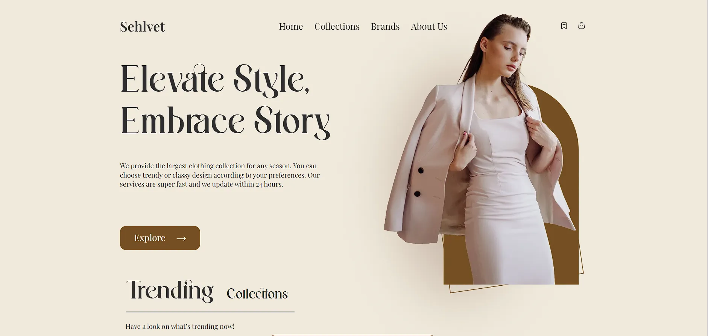
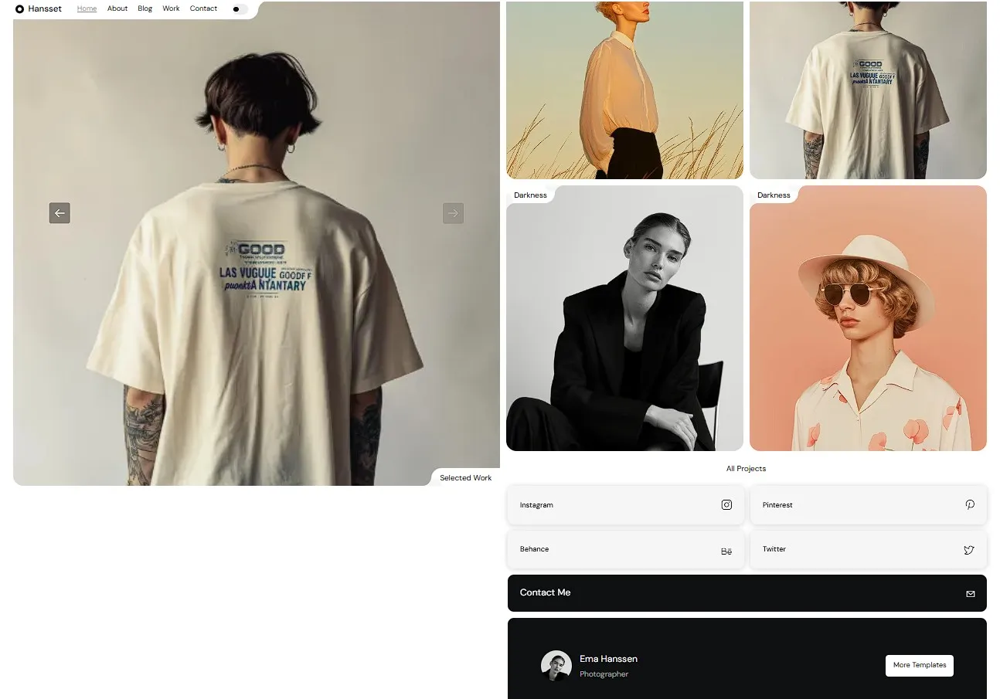
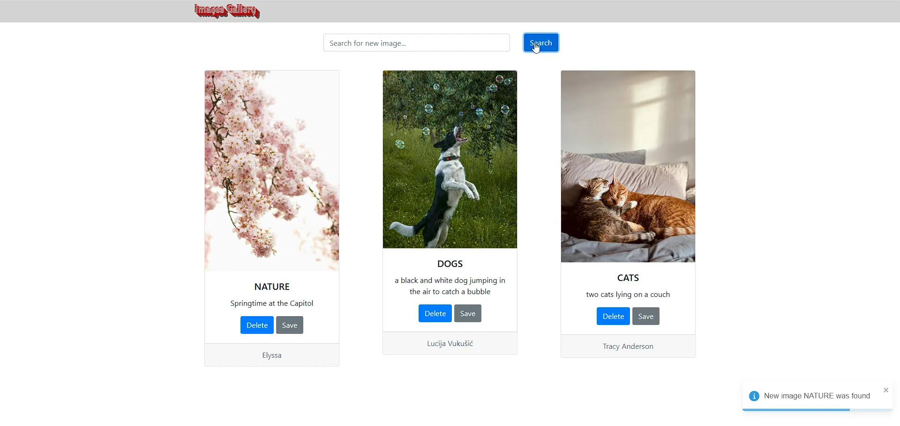

Sehlvet — Fashion Landing Page
A responsive landing page for the clothing brand Sehlvet, created with a focus on aesthetics, speed, and usability. Suitable for showcasing seasonal collections, brands, and customer reviews.
Frontend Developer & UI Engineer
Frontend & UI development focused on usability , performance and clear visual systems that work naturally in any environment.
Projects
These projects demonstrate my approach to building scalable, maintainable interfaces and solving real-world problems with a focus on clarity and performance.

A responsive landing page for the clothing brand Sehlvet, created with a focus on aesthetics, speed, and usability. Suitable for showcasing seasonal collections, brands, and customer reviews.

A responsive multi‑page website built for a creative agency. The project focuses on clean UI, smooth user interactions, and modular JavaScript logic.

A full‑stack image search application built with React, Flask, MongoDB, and the Unsplash API. The app allows users to search for images in real time and displays results in a responsive gallery UI. All services are fully containerized using Docker.
Skills & Tools
These are the tools and skills I use in practice. I focus on clean structure , responsive layouts , and a workflow that makes collaboration simple and predictable for clients.
I focus on user-centered design , Creating wireframes that reflect real goals
Semantic markup, responsive layouts, and clear structure . Code that works reliably across devices and browsers .
Carefully built interfaces with consistent spacing and attention to visual balance .
A clear workflow from design to code. Readable structure and predictable results .
I stay in touch, share progress, and take full responsibility until the job is done .
I learn continuously, close knowledge gaps , and improve with each project .
I'm Vasyl Stelmakh — a frontend developer and UI engineer with a strong background in creative collaboration and visual systems. My journey into frontend began not with code, but with people, ideas, and artistic projects. That experience taught me what quality really means: attention to detail, long-term thinking, and respect for the process. In art, as in engineering, there are no shortcuts to excellence.
Frontend development became the space where I could combine logic, structure, and empathy — building interfaces that communicate clearly and behave predictably. I approach every project as a system, not just a set of pages. My goal is always the same: to deliver clean, maintainable, and user-friendly solutions that feel natural in any environment.
I build interfaces that are fast, consistent, and predictable. My work is guided by engineering discipline and attention to detail.
I grow through documentation, open resources, and hands‑on experimentation. Continuous improvement matters more to me than certificates.
Frontend is where engineering meets communication. It’s the layer users interact with — and I treat it with respect. As someone who didn’t study programming in school, I came to code later in life. But once I discovered frontend, the system behind the screen finally clicked.
I value clarity, empathy, and professionalism in both code and collaboration. I see frontend as a way to build relationships — between users and interfaces, between clients and developers. And I’m committed to growing in this field, exploring new technologies, and adapting to each project’s unique needs.
Contacts
If you have a project in mind or just want to say hi, feel free to reach out. I'm always open to new opportunities and collaborations